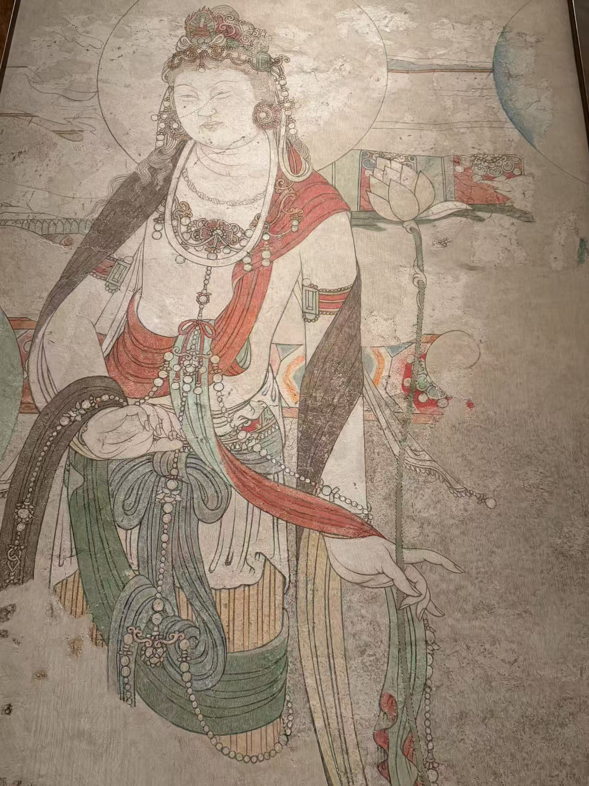

五代 / 寺院壁画
观音菩萨壁画
看画
点击照片可放大；有多张照片时，可以切换查看。


作品札记
观音的身体略成弯曲的“S”形，红色飘带沿肩与手臂滑落，绿裙上较大块的颜色，把身体的转折显得很清楚。和覆盖它的焚香菩萨相比，这一层的表面装饰更简省，目光更容易沿着轮廓移动。
它曾藏在《双菩萨焚香图》的泥灰层之下。破口露出的颜色促成了两层分离；现场展签附有1952年分离过程的照片。馆方解释，覆盖层保护了底下的色彩，同时也注明部分区域经过修补，所以今天鲜明的画面包含保存与修复的共同结果。
这幅画与上层壁画一起，属于卢芹斋1950年的赠品。上下层的关系比精确年份更明确：观音先画，焚香菩萨后画。它们如今并列在展厅里，原来却并不处在同一个可见的画面上。
资料：纳尔逊：观音菩萨壁画
断代资料有差异：现场展签写后晋天福二年（937）；馆方现行网页写约951—953年，同时仍说明本层早于覆盖它的焚香图。